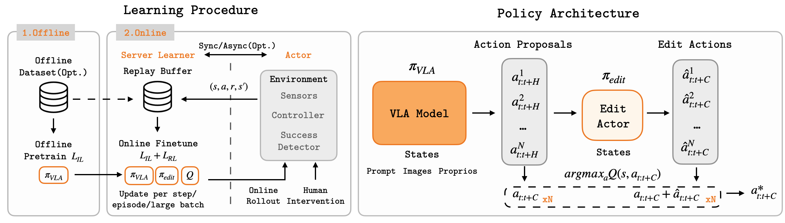
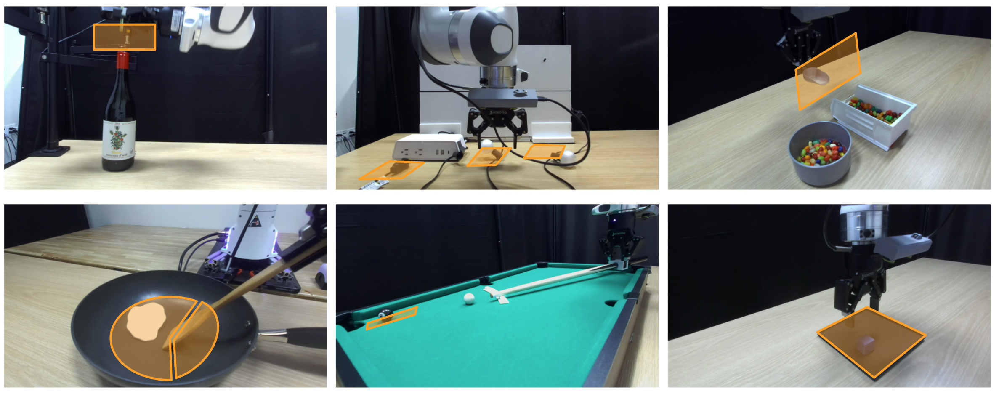

Final policies executing each task in the real world.
Policies trained with EXPO-FT recovering from perturbations, distractors, and visual variation. ← scroll →
The learned Q-function over selected actions on a successful and on failed rollouts.
Candidate action chunks proposed by the VLA and the edit policy.
How the edit actor refines the proposed VLA actions before execution.
Time-lapse of policies improving over the course of online RL. ← scroll →
Quantitative results across all tasks.
Autonomous 2x
Successful trials out of 30 per task.
Learning procedure and policy architecture.

EXPO-FT finetunes a pretrained Vision-Language-Action (VLA) policy with online reinforcement learning to a highly reliable performance with only a small amount of real-world interaction.
Visualization of the initial state randomization across tasks.

The orange regions indicate the randomized initialization areas used during training. THe tasks in our evaluations feature large initial state spaces.
@article{placeholder2026,
title = {Paper Title Placeholder},
author = {Author One and Author Two and Author Three and Author Four},
journal = {arXiv preprint arXiv:XXXX.XXXXX},
year = {2026}
}